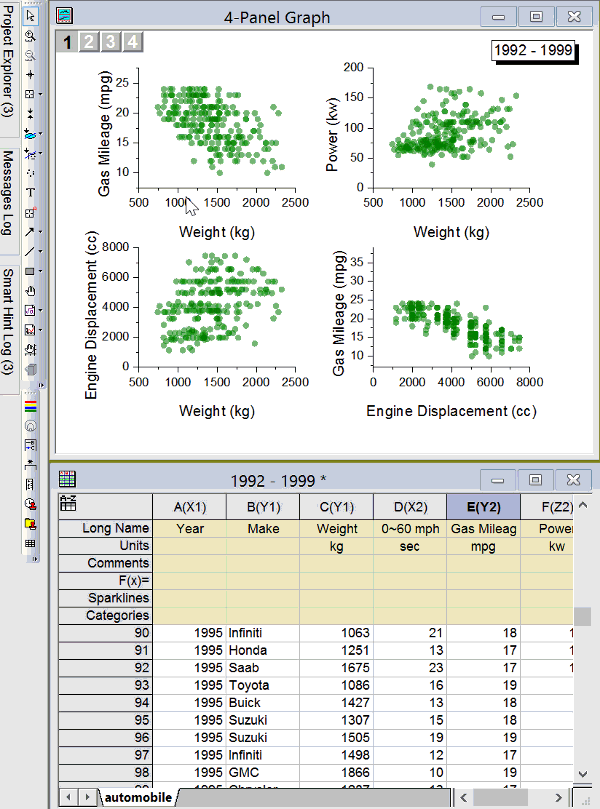

highlight-data-points-in-multiple-graphs-simultaneously
最終更新：2018/06/05
Origin 2019では
データハイライターツール (プロット操作・オブジェクト作成ツールバー)を使用して、ワークシートの同じ行に由来するすべての開いているグラフのデータポイントをハイライト表示することができます。

キーワード：クラスター、選択、ワークシートデータ